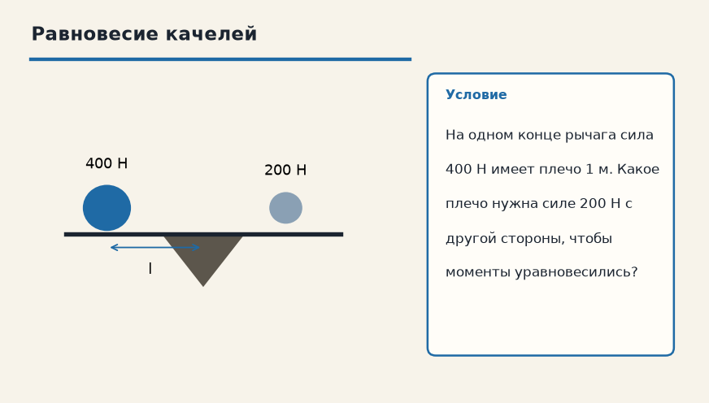

Механика · Статика и гидростатика · 5.1
Момент силы (Условие равновесия)
Лист для тетради. Распиши ручкой: дано, перевод в СИ, что найти, ход и ответ. Готового решения здесь нет — его не спрятали, его просто нет. Когда допишешь, покажи лист учителю.
1. Момент 10 Н·м
Сила 20 Н действует на рычаг, плечо относительно оси равно 0,5 м. Чему равен момент силы?

Дано
В СИ
Найти
Решение
Ответ
2. Равновесие качелей
На одном конце рычага сила 400 Н имеет плечо 1 м. Какое плечо нужна силе 200 Н с другой стороны, чтобы моменты уравновесились?

Дано
В СИ
Найти
Решение
Ответ